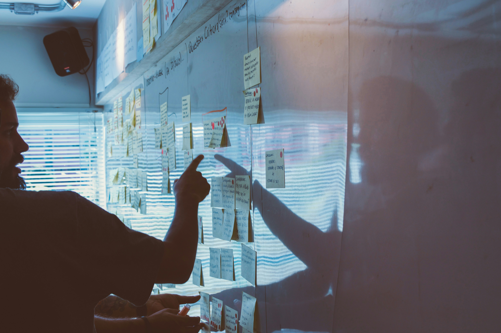
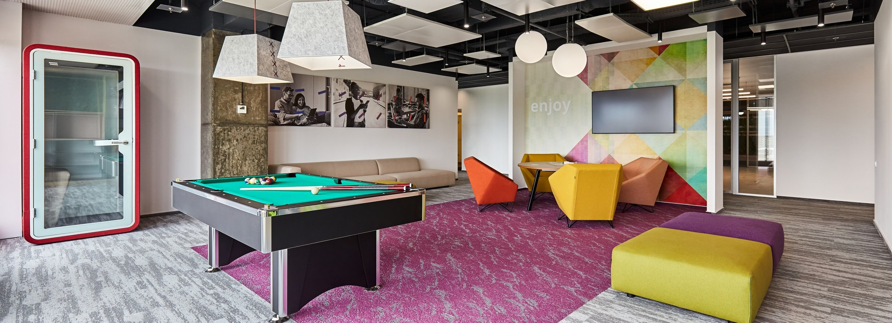
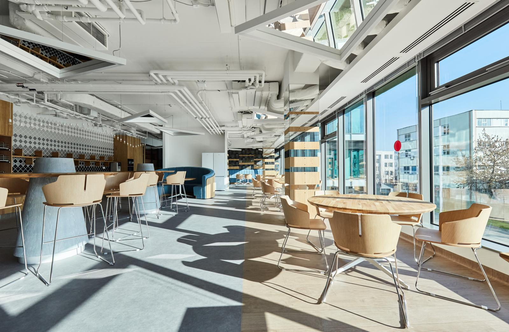
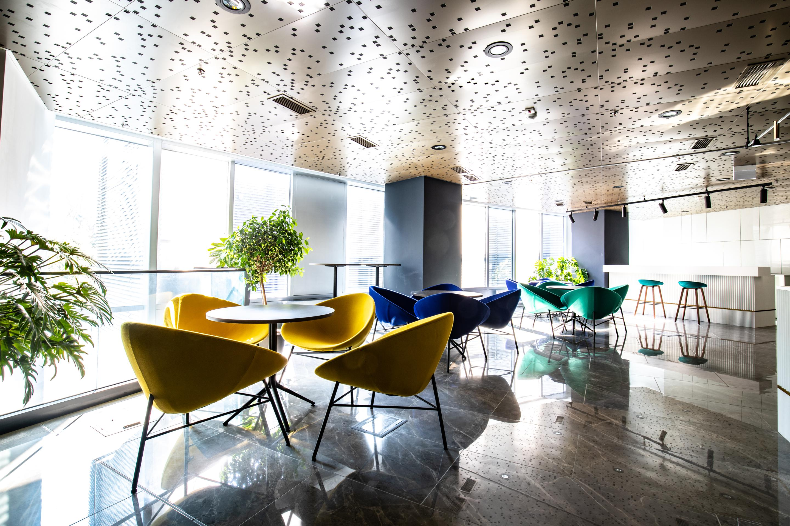

See what should change first and what matters less.
Workspace Consultancy
Before we redesign the workplace, we learn how it really works.
Consultancy helps leadership teams understand behaviour, capacity, friction, and ambition before design decisions start shaping the wrong answer beautifully.



Why Consultancy
Good workplace change starts with evidence, not assumptions.
We study how people use the office today, what the business needs next, and what the space can realistically support. That gives the project a more reliable foundation for design, phasing, and budget decisions.
Match layout and capacity to real patterns of work.
Connect ambition, cost, and feasibility earlier.
Approach
A simple process built around people, place, and performance.
People
We look at focus, collaboration, meetings, privacy, and the daily behaviours that shape how the office really performs.

Place
We study layout logic, constraints, adjacencies, capacity, and how flexible the workplace needs to be over time.

Performance
We connect spatial decisions to business goals, growth plans, culture, and the outcomes the workplace should support next.
Consulting Flow
We keep the process readable from first audit to decision framework.
Audit
Understand occupancy, movement, team patterns, focus needs, and workplace friction.
Strategy
Translate findings into a workplace brief, priorities, and a clearer direction for change.
Feasibility
Test the space, budget, and project ambition before the solution starts hardening.
Decision Support
Give leadership a stronger basis for design, phasing, budgeting, and next-step planning.

Outcome
You leave with a clearer workplace brief, not just more information.
Consultancy gives the project a more intelligent starting point: what the office should support, where investment matters most, and how the next design or fit-out phase can move with more confidence.
Talk to Workspace Studio